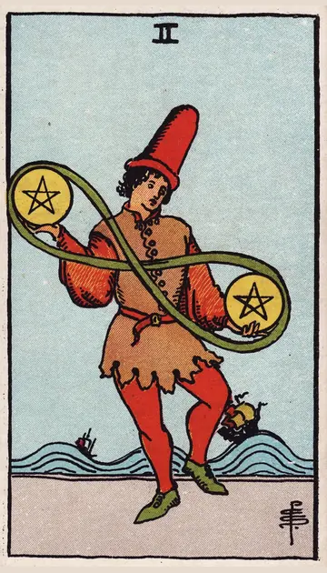

正位置ペンタクルの2の正位置
キーワード：バランス・柔軟さ・やりくり
恋愛
恋と生活のバランスを、上手にとれる時です。
相手の気持ちあなたとの関係を、生活と両立させたいと感じているようです。
この先無理のない形で、関係が続いていきそうです。
アドバイス忙しくても、連絡や気遣いを続けましょう。
気をつけること忙しさを理由に、相手を後回しにしないように。
この先無理のない形で、関係が続いていきそうです。
アドバイス忙しくても、連絡や気遣いを続けましょう。
気をつけること忙しさを理由に、相手を後回しにしないように。
人間関係
いろいろな人と、柔軟に付き合える時です。
相手の気持ちあなたに、合わせようとしているようです。
この先いろいろな人との縁が、広がりそうです。
アドバイス相手に合わせて、柔軟に対応しましょう。
気をつけること誰にでも良い顔をして、疲れないように。
この先いろいろな人との縁が、広がりそうです。
アドバイス相手に合わせて、柔軟に対応しましょう。
気をつけること誰にでも良い顔をして、疲れないように。
仕事・学業
複数のことを、器用にこなせる時期です。
この先うまくやりくりして、成果を出せそうです。
アドバイス優先順位をつけながら、並行して進めましょう。
気をつけること引き受けすぎないように。
アドバイス優先順位をつけながら、並行して進めましょう。
気をつけること引き受けすぎないように。
お金
お金のやりくりが、うまくいく時です。
この先うまくやりくりできそうです。
アドバイス入るお金と出るお金を、上手に調整しましょう。
気をつけること支払いの期日を、忘れないように。
アドバイス入るお金と出るお金を、上手に調整しましょう。
気をつけること支払いの期日を、忘れないように。
生活
忙しくても、暮らしをうまく回せる時です。
この先無理なく、毎日が回りそうです。
アドバイス予定に優先順位をつけて、やりくりしましょう。
気をつけること予定を詰め込みすぎないように。
アドバイス予定に優先順位をつけて、やりくりしましょう。
気をつけること予定を詰め込みすぎないように。
今日の運勢
予定をうまくやりくりできる日です。
この先予定どおりにこなせそうです。
アドバイス変化を楽しむ気持ちで、過ごしましょう。
気をつけること予定を詰め込みすぎないように。
アドバイス変化を楽しむ気持ちで、過ごしましょう。
気をつけること予定を詰め込みすぎないように。
逆位置ペンタクルの2の逆位置
キーワード：手いっぱい・混乱・バランスを崩す
恋愛
忙しさで、恋が後回しになりやすい時です。
相手の気持ちあなたとの時間を、うまく作れずにいるようです。
この先生活が落ち着けば、関係にも余裕が生まれそうです。
アドバイス恋と生活の、どちらも大切にできる形を考えましょう。
気をつけること忙しさを、相手のせいにしないように。
この先生活が落ち着けば、関係にも余裕が生まれそうです。
アドバイス恋と生活の、どちらも大切にできる形を考えましょう。
気をつけること忙しさを、相手のせいにしないように。
人間関係
付き合いが多すぎて、疲れやすい時です。
相手の気持ちあなたとの関係と、ほかのことの間で揺れているようです。
この先付き合いを整理すれば、楽になりそうです。
アドバイス付き合いを、少し整理しましょう。
気をつけること約束の重なりに気をつけて。
この先付き合いを整理すれば、楽になりそうです。
アドバイス付き合いを、少し整理しましょう。
気をつけること約束の重なりに気をつけて。
仕事・学業
やることが多く、手が回らない時期です。
この先整理すれば、うまく回り出しそうです。
アドバイスやることを減らし、大事なことに集中しましょう。
気をつけること締め切りや支払いを、忘れないように。
アドバイスやることを減らし、大事なことに集中しましょう。
気をつけること締め切りや支払いを、忘れないように。
お金
お金のやりくりが、苦しくなりやすい時です。
この先整理すれば、乗り切れそうです。
アドバイス支払いの予定を、一覧にしましょう。
気をつけること支払いの重なりに気をつけて。
アドバイス支払いの予定を、一覧にしましょう。
気をつけること支払いの重なりに気をつけて。
生活
やることが多く、暮らしが回らない時です。
この先整理すれば、回り出しそうです。
アドバイスやらないことを、決めましょう。
気をつけること慌ててミスをしないように。
アドバイスやらないことを、決めましょう。
気をつけること慌ててミスをしないように。
今日の運勢
予定が混乱しやすい日です。
この先明日は落ち着いて過ごせそうです。
アドバイス予定を見直し、余裕をつくりましょう。
気をつけること慌ててミスをしないように。
アドバイス予定を見直し、余裕をつくりましょう。
気をつけること慌ててミスをしないように。
このページの文章は、アプリ「ひとやすみタロット」の結果に使っている文章です。アプリでは、あなたの相談や、カードが出た位置（今の状況・これからの流れ・アドバイス）に合わせて、この中から文章を選びます。逆位置の読み方は逆位置のことをご覧ください。
「ペンタクルの2」が出たら、あなたの相談ではどう読む？
アプリでは、質問への答えに合わせて、カードの言葉をあなたの相談に合わせて届けます。
Android 対応・会員登録なし